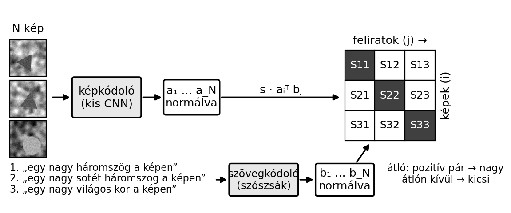

A Képosztályozás tanulási feladatként hálója pontosan azt a három osztályt ismeri, amelyre tanítottuk: kör, négyzet, háromszög. Ha holnap a „sötét kör” és a „világos kör” megkülönböztetése lesz a feladat, új fejet és új címkéket kell gyártanunk. Egy ember ehelyett egyszerűen szavakkal mondja meg, mit keres.
A kép–szöveg modellek ezt teszik lehetővé: a képet és a szöveget ugyanabba a vektortérbe képezik le úgy, hogy az összetartozó párok közel kerüljenek egymáshoz. Ekkor egy osztályt a leírása definiál, és az osztályozás hasonlóság-keresés. A módszer ismert képviselője a CLIP [S-CLIP], amely az Önfelügyelt és kontrasztív tanulás InfoNCE-veszteségét viszi át kép–szöveg párokra.
Fontos: ebben az alfejezetben nincs igazi CLIP-modell. Mindent egy apró, szintetikus példán mutatunk meg: feliratozott alakzatok, egy kis CNN képkódoló és egy „szószsák” szövegkódoló. A fogalmak és a hibamódok ugyanazok, a számok viszont csak erre a játékadatra érvényesek, és semmit nem mondanak a nagy modellek teljesítményéről.

A képet a képkódoló , a feliratot a szövegkódoló alakítja hosszú vektorrá; mindkettőt egységhosszúra normáljuk. Egy párból álló batchnél kiszámoljuk mind az hasonlóságot. A tanítás célja: az átlóban (összetartozó párok) nagy, az átlón kívül kicsi értékek. A feliratok a „címkék” — nem kell kézzel osztályokat definiálni, elég, ha a képekhez szöveg tartozik (a nagy modelleknél webről gyűjtött képaláírások [S-CLIP]).
Az interaktív ábrán kész, a játékadaton tanított modellek vannak. Írhatsz saját, magyar szavas promptokat, és a hasonlósági mátrix azonnal frissül.
A hőtérkép sorai a képek, oszlopai a promptok. A modellnek nincs külön „osztályfeje”: a döntés az, hogy melyik prompt vektora van a legközelebb a kép vektorához. Az utolsó négy képre hamis betűjel került; erre a „Korlátok és torzítások” rész tér vissza.
Jelölje az -edik kép, a -edik felirat egységvektorát. A pontszámmátrix ():
Szavakban: a koszinusz-hasonlóság, egy tanult skálával szorozva (a hőmérséklet reciprokával). A szimmetrikus veszteség a két irányban („melyik felirat tartozik a képhez?” és „melyik kép tartozik a felirathoz?”) számolt keresztentrópia átlaga [S-CLIP]:
Ez az nn.info_nce(..., symmetric=True); az
nn.clip_loss a skála logaritmusa szerinti gradienst is
visszaadja. Mivel
,
a skála gradiense a pontszámok szerinti gradiensek
-sel
vett szorzatösszege. A skálát felülről korlátozzuk (itt
-nál,
ahogyan a CLIP is korlátoz [S-CLIP]), különben a tanítás elszállhat.
Hamis negatívok. Ha egy batchben két kép felirata azonos (nálunk sok az „egy kör”), a veszteség egymás negatívjának tekinti őket, holott mindkét felirat mindkét képre igaz. Kis, ismétlődő szókészletnél ez érezhető zaj, nagy, változatos adatnál ritkább.
A mi játékmodellünk. A feliratok rövid, magyar
szavakból álló mondatok, például „egy nagy sötét kör a képen”; a méret-
és fényességszó néha hiányzik, a főnév ritkán csak „alakzat”. A szótár
szó. A szószsák (bag of words) szövegkódoló a szavak
beágyazásának átlagát vetíti
dimenzióba (nn.BagOfWords): a szórendet nem
látja, a szótáron kívüli szó hatástalan. A képkódoló a kis CNN
törzse és egy
-es
lineáris réteg.
A tanítás után az osztályozáshoz nem kell új tanítás (zero-shot):
Ez lényegében egy lineáris osztályozó, amelynek súlyait a szövegkódoló állítja elő. A nem kalibrált valószínűség: a jelöltlistától függ, és ha egyik prompt sem illik a képre, a softmax akkor is -et oszt szét.
Prompt-együttes (prompt ensemble): ugyanahhoz az osztályhoz több sablont írunk („egy kör”, „egy kör a képen”, „nagy kör”), a normált vektorokat átlagoljuk, majd újranormáljuk:
Szavakban: az osztály egy „átlagos leírása”, amely kevésbé függ
egyetlen megfogalmazás véletlenétől (nn.prompt_ensemble,
nn.zero_shot_probs). Gyakori fogás a részletesebb
osztályleírás is (milyen alakú, milyen színű), nem csak
a név.
A zero-shot ötlet dobozokra és maszkokra is átvihető: ez a nyílt szótáras (open-vocabulary) látás.
A nehézségek: a kép–szöveg modell egész képre tanult, kis, kivágott régiókon gyengébb lehet; a „háttér” nem írható le egyetlen prompttal; az NMS-küszöbök osztályfüggők. A korszerű rendszerek ezért a detektort és a nyelvi illesztést együtt tanítják vagy finomhangolják (a részletek és az aktuális eredmények gyorsan változnak, itt nem közlünk számokat).
Mikor ne támaszkodj rá? Biztonságkritikus vagy személyeket érintő döntésnél; ha nincs saját, a célkörnyezetből származó címkés teszthalmaz; ha a hibás osztályozás következménye súlyos, és nincs emberi ellenőrzés.
Továbbvitt eredmény. A zero-shot értékelést és a torzítások tipikus mintáit az Metrikák: PR-görbe, AP/mAP, mIoU és kalibráltság, az Adatkészletek, annotáció és eloszláseltolódás és az Etika, adatvédelem és szabályozás alfejezet használja.
1. Szimmetrikus veszteség. Három kép–felirat pár, a koszinuszok mátrixa (sorok: képek, oszlopok: feliratok), , tehát :
Soronként (kép → felirat) az átló valószínűsége : , , . A veszteségek : ; ; , átlaguk .
Oszloponként (felirat → kép): , , ; veszteségek ; ; , átlag . A szimmetrikus veszteség . A legnagyobb tag a 3. kép és a 2. felirat keveredése.
2. A prompt számít. Egy kép vektora , két osztály két-két prompttal:
| osztály | 1. prompt | 2. prompt |
|---|---|---|
| A | ||
| B |
Ha A-t csak az 1., B-t csak a 2. prompttal írjuk le, a koszinuszok és : B nyer. Együttessel: , normálva , koszinusz ; , normálva , koszinusz . mellett : most A nyer. A döntés a promptok megválasztásán fordult meg.
A kézi példák:
import numpy as np
from visionkit import nn
C = np.array([[0.9, 0.2, 0.1], [0.3, 0.8, 0.4], [0.1, 0.6, 0.7]])
S = 10 * C
rows = -np.log(np.diag(nn.softmax(S, axis=1)))
cols = -np.log(np.diag(nn.softmax(S, axis=0)))
print("kép → felirat:", rows.round(4), " átlag", rows.mean().round(4))
print("felirat → kép:", cols.round(4), " átlag", cols.mean().round(4))
print("szimmetrikus veszteség:", round((rows.mean() + cols.mean()) / 2, 4))
a = np.array([[0.6, 0.8]])
classes = np.array([[[1.0, 0.0], [0.0, 1.0]], [[0.8, -0.6], [0.6, 0.8]]])
single = np.stack([classes[0, 0], classes[1, 1]])
print("egy prompttal:", nn.zero_shot_probs(a, single, 0.1).round(3))
print("együttessel: ", nn.zero_shot_probs(a, classes, 0.1).round(3))kép → felirat: [0.0012 0.0247 0.3151] átlag 0.1137
felirat → kép: [0.0028 0.1291 0.0509] átlag 0.061
szimmetrikus veszteség: 0.0873
egy prompttal: [[0.018 0.982]]
együttessel: [[0.944 0.056]]A modelleket a figures/src/cv060_common.py tanítja
(
kép–felirat pár,
korszak, batch
,
kezdő
)
és a figures/data/ mappába menti. Négy változat van:
| Változat | A tanítóadat sajátossága |
|---|---|
| tiszta | minden alakzat–fényesség kombináció, véletlenül |
| kihagyott | sötét háromszög egyetlen sem szerepel |
| elfogult | %-ban a körök világosak, a négyzetek és háromszögek sötétek |
| feliratos | a képek %-án a sarokban a helyes kezdőbetű (K, N, H) látszik |
Betöltés, majd zero-shot alakzat-osztályozás egy prompttal és prompt-együttessel, új képen:
import sys
sys.path.insert(0, "figures/src")
from cv060_common import get_model
models = {v: get_model(v) for v in ("tiszta", "kihagyott", "elfogult", "feliratos")}
test = nn.captioned_shapes(1000, seed=1)
single = ["egy kör", "egy négyzet", "egy háromszög"]
templates = ["egy {}", "{} a képen", "egy nagy {}", "egy kis sötét {}", "világos {}"]
def zero_shot(model, images, prompts):
"""prompts: osztályonként egy szöveg vagy szöveglista; eredmény: jósolt osztályindex."""
text = np.stack([model.embed_texts(p if isinstance(p, list) else [p]).mean(axis=0)
for p in prompts])
return nn.zero_shot_probs(model.embed_images(images), text).argmax(axis=1)
ensemble = [[t.format(w) for t in templates] for w in nn.SHAPE_WORDS]
for name, model in models.items():
one = np.mean(zero_shot(model, test["images"], single) == test["shape"])
many = np.mean(zero_shot(model, test["images"], ensemble) == test["shape"])
print(f"{name:10s} alakzat: egy prompt {one:.3f} együttes {many:.3f}")
bright = zero_shot(models["tiszta"], test["images"], ["sötét alakzat", "világos alakzat"])
size = zero_shot(models["tiszta"], test["images"], ["kis alakzat", "nagy alakzat"])
print(f"tiszta: fényesség {np.mean(bright == test['light']):.3f}, "
f"méret {np.mean(size == test['big']):.3f} (véletlen: 0.500)")tiszta alakzat: egy prompt 0.710 együttes 0.664
kihagyott alakzat: egy prompt 0.689 együttes 0.607
elfogult alakzat: egy prompt 0.546 együttes 0.567
feliratos alakzat: egy prompt 0.504 együttes 0.493
tiszta: fényesség 0.992, méret 0.773 (véletlen: 0.500)A tiszta modell az alakzatot a véletlennél () jóval jobban, de messze nem tökéletesen találja el, a fényességet viszont majdnem hibátlanul: a fényesség egyetlen átlagértékből kiolvasható, az alakhoz térbeli szerkezet kell. Az együttes itt rontott: a sablonok között olyanok is vannak („egy kis sötét {}”, „világos {}”), amelyek jelzőkkel egy-egy alcsoport felé tolják az osztályvektort. Az együttes tehát nem automatikus javítás, a sablonokat is mérni kell.
Kihagyott kombináció. Hat promptot adunk (fényesség × alakzat), és kombinációnként mérünk:
words = [("sötét", s) for s in nn.SHAPE_WORDS] + [("világos", s) for s in nn.SHAPE_WORDS]
prompts = [f"egy {b} {s}" for b, s in words]
truth = test["shape"] + 3 * test["light"]
for name in ("tiszta", "kihagyott"):
pred = zero_shot(models[name], test["images"], prompts)
held = truth == 2 # sötét háromszög
print(f"{name:10s} 6 osztály: sötét háromszög {np.mean(pred[held] == 2):.3f} "
f"többi {np.mean(pred[~held] == truth[~held]):.3f}")
chosen = np.bincount(pred[held], minlength=6) / held.sum()
print(" a sötét háromszögekre adott jóslatok aránya:", chosen.round(2))tiszta 6 osztály: sötét háromszög 0.781 többi 0.691
a sötét háromszögekre adott jóslatok aránya: [0. 0.2 0.78 0. 0. 0.02]
kihagyott 6 osztály: sötét háromszög 0.287 többi 0.708
a sötét háromszögekre adott jóslatok aránya: [0.02 0.36 0.29 0.01 0.03 0.3 ]A sötét háromszöget egyetlen tanítópélda sem mutatta, a modell azonban ismeri a „sötét” és a „háromszög” szót külön. A tiszta modell ezen a kombináción -at ér el, a kihagyott adaton tanított csak -ot, miközben a többi öt kombináción nem romlott. A kompozíció (ismert tulajdonságok új párosítása) tehát nem jön ingyen. Nagy modelleknél a hatás enyhébb lehet, de a jelenség ismert kockázat.
Elfogult adat. Az alakzatpontosságot külön mérjük azokon a tesztképeken, ahol a kép a tanítóadat együttjárását követi, és ahol szembemegy vele:
aligned = test["light"] == (test["shape"] == 0)
for name in ("tiszta", "elfogult"):
ok = zero_shot(models[name], test["images"], single) == test["shape"]
print(f"{name:10s} egyező: {ok[aligned].mean():.3f} ellentétes: "
f"{ok[~aligned].mean():.3f}")tiszta egyező: 0.718 ellentétes: 0.701
elfogult egyező: 0.881 ellentétes: 0.172Az elfogult modell az „egyező” képeken még a tisztánál is jobbnak látszik (), az ellentéteseken viszont -et ér el, ami rosszabb a véletlennél: gyakorlatilag a fényességből találja ki az alakzatot. Ha a teszthalmaz ugyanazt az együttjárást követi, mint a tanítóadat, ez a hiba láthatatlan marad.
Feliratos képek. Három tesztváltozat: betű nélkül, helyes betűvel, hamis betűvel:
variants = {"betű nélkül": test,
"helyes betű": nn.captioned_shapes(1000, seed=1, tag=1.0),
"hamis betű": nn.captioned_shapes(1000, seed=1, wrong_tag=True)}
for name in ("tiszta", "feliratos"):
for label, data in variants.items():
pred = zero_shot(models[name], data["images"], single)
line = f"{name:10s} {label:12s} alakzat {np.mean(pred == data['shape']):.3f}"
if label == "hamis betű":
line += f" a betűt követi {np.mean(pred == data['tags']):.3f}"
print(line)tiszta betű nélkül alakzat 0.710
tiszta helyes betű alakzat 0.335
tiszta hamis betű alakzat 0.320 a betűt követi 0.322
feliratos betű nélkül alakzat 0.504
feliratos helyes betű alakzat 1.000
feliratos hamis betű alakzat 0.049 a betűt követi 0.898Ez a tipográfiai támadás játékváltozata. A feliratos modell betű nélkül csak -ot ér el, mert a könnyű jel mellett az alakot alig tanulta meg; a helyes betűvel hibátlan, hamis betűvel az esetek %-ában a betűt követi, az alakzatot alig %-ban találja el. A tiszta modell sem immunis: sosem látott fehér négyzetet a sarokban, a betűs képeken a pontossága a véletlen szintre esik. Ez eloszláseltolódás: egy apró, a tanításból hiányzó elem is tönkreteheti a döntést.
Valódi feladathoz előtanított kép–szöveg modellt használnál. Az
alábbi vázlatot a könyv ellenőrzése nem futtatta (a
transformers és a PyTorch nincs a környezetben).
# részlet
# opcionális; ellenőrizendő: transformers verzió, a súlyok licence és felhasználási feltételei
from PIL import Image
from transformers import CLIPModel, CLIPProcessor
name = "openai/clip-vit-base-patch32" # modellazonosító (ellenőrizendő)
model, processor = CLIPModel.from_pretrained(name), CLIPProcessor.from_pretrained(name)
image = Image.open("sajat_kep.png") # saját, személyt nem ábrázoló kép
texts = ["a photo of a mug", "a photo of a notebook", "a photo of something else"]
inputs = processor(text=texts, images=image, return_tensors="pt", padding=True)
probs = model(**inputs).logits_per_image.softmax(dim=1)
print(dict(zip(texts, probs[0].tolist())))Figyelj a modellkártyán leírt korlátokra, mérd meg a saját adatodon, és használj „egyik sem” promptot vagy küszöböt.
A cv060-zero-shot interaktív ábrán:
A kép–szöveg modell két kódolója közös térbe képez; a tanítás az hasonlósági mátrix átlóját erősíti szimmetrikus InfoNCE-veszteséggel és tanult skálával. Zero-shot osztályozásnál a promptok vektorai az osztályozó súlyai; a prompt-együttes a normált vektorok átlaga. Nyílt szótáras detektálásnál jelölt régiók vektorait hasonlítjuk a szöveghez. A modell a tanítóadat együttjárásait is megtanulja: rövidítések, torzítások, a képre írt szöveg és a kihagyott kombinációk hibát okozhatnak, a softmax nem kalibrált. A zero-shot értékelés és a torzítások a Metrikák: PR-görbe, AP/mAP, mIoU és kalibráltság–Etika, adatvédelem és szabályozás alfejezetek témái.
: . A 2. sor: , , . A 2. oszlop: , , .
Minden pontszám egyforma, mindkét irányban , az átlag is ennyi.
-nél az átlag maga a vektor, az újranormálás nem változtat. Normálás nélkül az átlagban a hosszabb vektorú prompt nagyobb súlyt kap. A hasonlóságok átlaga (normált vektorokkal) ; az együttes ezt még -val osztja, ami osztályonként eltér, ezért az argmax változhat: a széttartó promptokból álló osztály ( kicsi) az újranormálással „felértékelődik”.
Küszöb a legjobb koszinuszra (vagy a softmax-maximumra egy hozzáadott általános prompt mellett). A küszöböt címkés validációs halmazon választod, amely tartalmaz ismeretlen osztályú képeket is, a kívánt hibaarány (téves elfogadás és téves elutasítás) szerint; a végső értéket külön teszthalmazon méred.
for word_set in (["kör", "négyzet", "háromszög"],
["egy kör", "egy négyzet", "egy háromszög"],
["egy nagy sötét kör a képen", "egy nagy sötét négyzet a képen",
"egy nagy sötét háromszög a képen"]):
pred = zero_shot(models["tiszta"], test["images"], word_set)
ok = pred == test["shape"]
match = ~test["light"] & test["big"]
print(f"{word_set[0]!r:32s} összes {ok.mean():.3f} nagy sötét képeken "
f"{ok[match].mean():.3f} többin {ok[~match].mean():.3f}")'kör' összes 0.531 nagy sötét képeken 0.685 többin 0.484
'egy kör' összes 0.710 nagy sötét képeken 0.702 többin 0.712
'egy nagy sötét kör a képen' összes 0.653 nagy sötét képeken 0.889 többin 0.580A puszta főnév („kör”) gyengébb, mint a tanítófeliratokra hasonlító „egy kör”. A hosszú, jelzős prompt a leírásra illő (nagy, sötét) képeken kiugróan jó (), a többin viszont rosszabb: a közös jelzők a szószsák-átlagban „felhígítják” a főnevet, és a leírásra nem illő képeknél a fényesség- és méretjel félreviszi a döntést. A promptot ezért a saját adatodon, alcsoportonként mérd.
Címkékkel: az alakzat–fényesség kombinációk kiegyensúlyozása (átmintavételezés vagy súlyozás), szintetikus ellentétes példák. Címkék nélkül: a bővítés tegye tönkre az együttjárást (véletlen fényesség-invertálás — de ekkor a feliratban a fényességszót is javítani vagy elhagyni kell). Mérés: egyező és ellentétes tesztcsoport külön pontossága, a legrosszabb csoport pontossága, és a nem érintett feladatok (méret, fényesség) ellenőrzése.